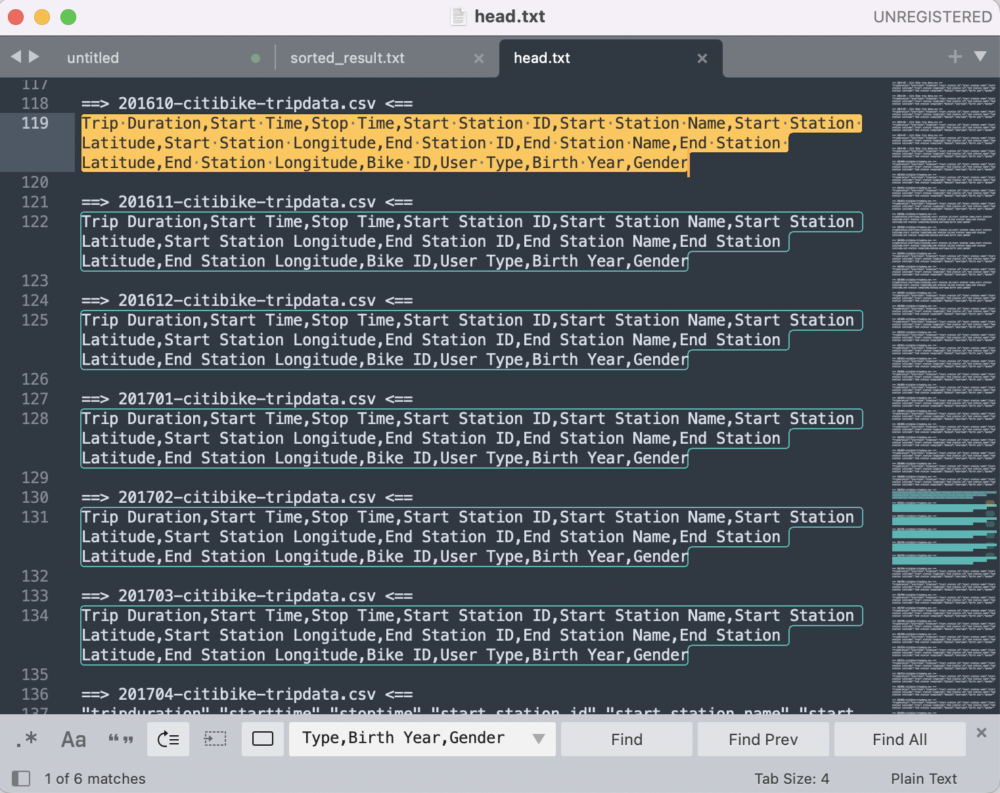

當你拿到數筆資料時，需要先檢查每一筆的資料欄位名稱（Column Name）是否相同，才能將所有資料 load 進 Incorta 當作同一個資料表（table）
如果有發現任何 column name 不同的情形，就需要做資料預處理～
下面兩個不同月份的資料，看到他們的 column name 有些不同，上面的是 tripduration, starttime, stoptime, ...；下面的則是 Trip Duration, Start Time, Stop Time, ... ，因此需要做預處理
mac內建 terminal 終端機、Sublime 編輯器
使用mac內建terminal 終端機做處理，開啟terminal 輸入資料存放位置
cd ~/[資料存放位置]
ex : cd ~/Downloads/citibike-tripdata/
利用head -1查看所有data的第一列 column name
head -1 *.csv
去除檔案名，僅查看第一列 column name
find . -name '*.csv' -exec head -1 {} \;
存檔存成 result.txt (任何名稱的 .txt 檔案都可以)
find . -name '*.csv' -exec head -1 {} \;>result.txt
只留下不同 column name 的結果，並存成 .txt 檔案
sort result.txt |uniq>sorted_result.txt
用 Sublime 打開 sorted_result.txt 查看
可以發現不一樣的是第三行
"Trip Duration,Start Time,Stop Time,Start Station ID,Start Station Name,Start Station Latitude,Start Station Longitude,End Station ID,End Station Name,End Station Latitude,End Station Longitude,Bike ID,User Type,Birth Year,Gender"
grep "不同的地方" *.csv|wc -l
ex :
grep "Trip Duration,Start Time,Stop Time,Start Station ID,Start Station Name,Start Station Latitude,Start Station Longitude,End Station ID,End Station Name,End Station Latitude,End Station Longitude,Bike ID,User Type,Birth Year,Gender" *.csv|wc -l
結果有6個檔案（6個月）的 column name 不同
先將所有檔名和第一列存起來，存成 .txt 檔
head -1 *.csv>head.txt
用 Sublime 開啟 head.txt ，利用 cmd+F 搜尋 "不同的column name" -> Trip Duration,Start Time,Stop Time,Start Station ID,Start Station Name,Start Station Latitude,Start Station Longitude,End Station ID,End Station Name,End Station Latitude,End Station Longitude,Bike ID,User Type,Birth Year,Gender，找出哪幾個檔案 column name 不同，並且直接透過Sublime修改
可以發現不同的分別是：201610, 201611, 201612, 201701, 201702, 201703
直接利用 Sublime 將 column name 修改成 "tripduration","starttime","stoptime","start station id","start station name","start station latitude","start station longitude","end station id","end station name","end station latitude","end station longitude","bikeid","usertype","birth year","gender" 並存檔

完成後就可以將檔案 load 進 Incorta
再將所有資料重新Full Load